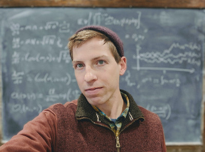

I am generally interested in understanding the relationship between pattern and process in ecological communities. This inquiry leads to a broad range of questions involving mechanisms for species coexistence, the role of contemporary coevolution in structuring interaction networks, the effects of genetic constraints on community level patterns, feedbacks with chemical cycles, the macroevolutionary history of interacting taxa and, of course, much much more. However, developing models and statistical methods to explore these biological curiosities and to test our ideas on them leads to challenging mathematical and computational problems. Building off my background in mathematics, I hope to work with theoreticians and empiricists in bringing theory and data closer together to tackle these problems.
I am a PhD candidate at the University of Idaho advised by Professor Scott Nuismer and planning to graduate June 2020. My degree program is Bioinformatics and Computational Biology (BCB) which is housed within The Institute for Bioinformatics and Evolutionary Studies (IBEST). My CV is available here.
My dissertation contributes to a coevolutionary theory of community ecology with a focus on plant-pollinator networks. In particular, I have recently developed a Maximum Likelihood method to infer the strength of coevolution between a pair of species using spatially structured phenotypic data (Week 2019). I am currently finishing a project applying Measure-Valued Branching Processes and Stochastic Partial Differential Equations to formally derive stochastic models of coevolving communities. Working with Professor Paul CaraDonna, we plan on using this new set of tools to develop an Approximate Bayesian Computation to infer the distribution of phenological coevolution in a sub-alpine plant-pollinator network.